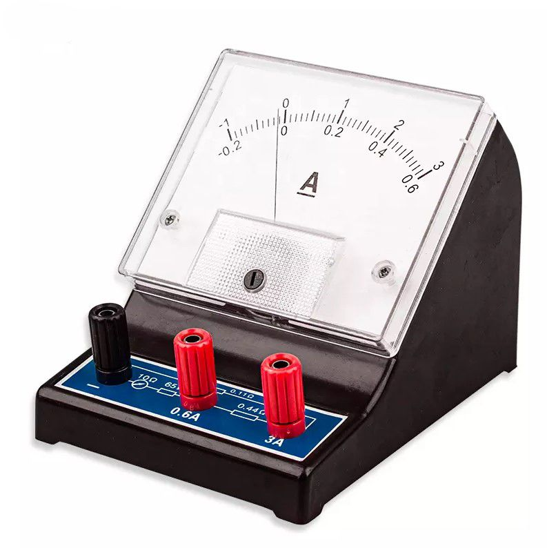
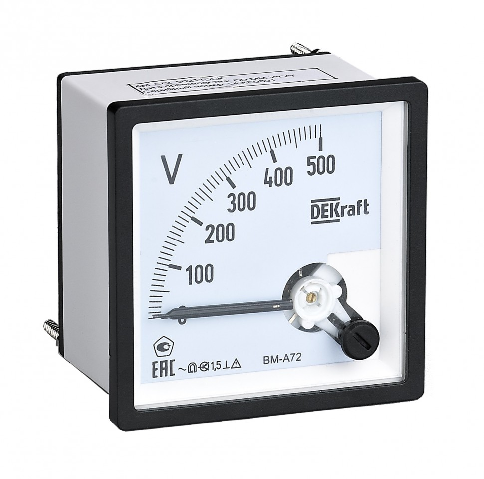

Электр тогунун күчүн өлчөөчү прибор
Амперметр — электр чынжырындагы ток күчүн өлчөөчү электрдик өлчөөчү прибор. Ал электр тогунун күчүн ампер (А) менен көрсөтөт. Амперметр физикада жана электр техникасында кеңири колдонулат.

Бул прибордун негизги милдети — электр тогунун күчүн аныктоо. Анын шкаласы жана көрсөткүч жебеси бар.
Амперметрдин өлчөө бирдиги — ампер (А). Электр тогунун күчү I тамгасы менен белгиленет.
Формуласы: I = U / R
I — ток күчү, U — чыңалуу, R — электр каршылыгы.

Амперметр электр чынжырына удаалаш туташтырылат. Ал чынжыр аркылуу өткөн электр тогунун күчүн өлчөйт. Приборду колдонууда өлчөө диапазонун туура тандоо керек.
Амперметр электр тогунун күчүн аныктоого жардам берет. Анын жардамы менен электр системаларынын иштешин көзөмөлдөөгө жана өлчөөлөрдү жүргүзүүгө болот.
QR-кодду сканерлеп, амперметр жөнүндө маалымат менен таанышыңыз.
Амперметр жөнүндө толук маалымат!